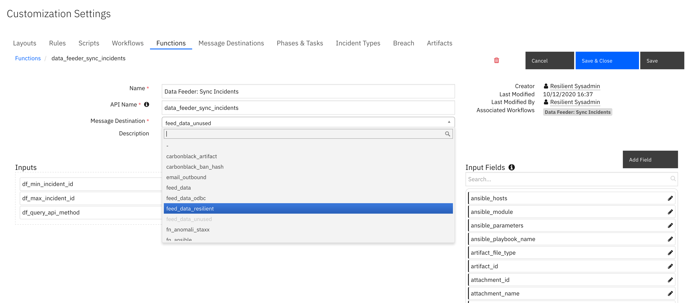

Data Feed ResilientFeed Plugin#
Introduction#
This package contains the Resilient plugin to the Data Feed extension. The Data Feed Extension allows you to maintain “replica” data for Resilient incidents artifacts, tasks, notes, and so on, in another Resilient organization in the same or different Resilient platform. The updates are performed in near real-time.
Refer to the documentation on the Data Feed extension for use cases supported and configuration options. Also refer to the other Data Feed plugins which can be used in combination.
Features#
Transfer incident data between two instances of Resilient.
Transfer incident data between two Organizations within the same Resilient instance.
Transfer incident data to more than one Resilient instance at the same time.
Synchronized incident data objects include: artifacts, attachments, notes, milestones, tasks and datatables.
Choice of databases too retain synchronization information: SQLite or PostreSQL
License#
Unless otherwise specified, contents of this repository are published under the MIT open-source LICENSE.
Installation#
The integration package contains Python components that are called by the Resilient platform. These components run in the Resilient Circuits integration framework. The package also includes Resilient customizations that will be imported into the platform later. You perform these installation procedures at the Resilient integration server.
Install the Python Components#
Complete the setup and configuration of your Integration server as detailed in our Integration Server Guide.
Run the following commands to install the package:
unzip app-rc_data_feed_plugin_resilientfeed-<version>.zip
[sudo] pip install --upgrade rc_data_feed-plugin_resilientfeed-<version>.tar.gz
If adding support for PostreSQL, upgrade the package as:
[sudo] pip install --upgrade rc_data_feed-plugin_resilientfeed-<version>.tar.gz[postgres]
Configure Resilient-circuits
The Resilient Circuits process runs as an unprivileged user, typically named integration. If you do not already have an integration user configured on your appliance, create it now.
Complete the following steps to configure and run the integration:
Using sudo, switch to the integration user, as follows:
sudo su - integration
Use one of the following commands to create or update the resilient-circuits configuration file. Use –c for new environments or –u for existing environments.
resilient-circuits config -c
or
resilient-circuits config –u [-l rc-data-feed-plugin-resilientfeed]
Import custom fields to retain source organization and incident ids:
resilient-circuits customize -l rc-data-feed-plugin-resilientfeed
Note: Perform an export and reimport of these customizations into the target Resilient organization in order to use them. See app.config parameter: sync_reference_fields.
Edit the resilient-circuits configuration file, as follows:
In the
[resilient]section, ensure that you provide all the information required to connect to the Resilient platform.In the
[feeds]section, define the feed(s) you intend to use and create separate sections for each feed. For example:feed_names=resilient_feedIn the [resilient_feed] section, configure the settings for your Resilient environment.
[feeds]
feed_names=resilient_feed
reload=True
## feed_data_resilient is the default queue that will be listened to
queue=feed_data_resilient
[resilient_feed]
class=ResilientFeed
## provide configuration information to the target Resilient and Organization
host=localhost
#proxy_host=
api_key_id=
api_key_secret=
#email=
#password=
port=443
org=
cafile=false
## identify a sqlite db file to retain mapping between resilient instances.
sqlite_sync_file=/path/to/file
## postgresql db connection if sqlite_sync_file is not used
postgresql_connect=Driver={PostresSQL Driver};Server=127.0.0.1;DB=<db>;Port=5432;connectTimeout=0
postgresql_uid=<acct>
postgresql_pwd=<pwd>
## optional semicolon separated list of fields to allow incidents to sync. ex. incident_type_ids in ["Phishing", "Malware"];custom_field = a;description ~ malicious
#matching_incident_fields=
## when using matching_incident_fields, specify whether 'all' or 'any' field needs to match to accept
#matching_operator=all
## optional semicolon separated list of fields to exclude from an incident. Sections of fields can be used: pii;gdpr;hipaa;cm
#exclude_incident_fields=
## optionally include references within the incident to source org_id and incident_id. Values true/false
sync_reference_fields=True
## true|false - specify whether to delete the target incident if the source incident is deleted. Default: false
delete_incidents=false
matching_incident_fields#
Use this capability to filter which incidents and it’s tasks, notes, artifacts, etc. are sent to the target organization. Below are a few examples for how to use this capability.
Filter on the incident owner.
matching_incident_fields=ownerid == user@example.com
Filter on any incident type phishing or malware.
matching_incident_fields=incident_type_ids in [‘Phishing’, ‘Malware’]
Filter on the title or description field containing the word ‘malicious’.
matching_incident_fields=name ~ malicious;description ~ malicious matching_operator=any
Filter on a custom boolean field set to True.
matching_incident_fields=custom_bool == True
Filter on open incidents. This is useful when performing a bulk load with as
reload=trueor using theData Feeder: Sync Incidentsfunction.
matching_incident_fields=plan_status == A
Filtering on date and datetime fields are a little trickly as the epoch timestamp is needed. Websites such as https://www.epochconverter.com/ can be used to generate a timestamp. Be sure to use the GMT timezone and use a timezone in milliseconds.
matching_incident_fields=discovered_date >= 1604073642000
ResilientFeed Class#
This class allows you to write all incoming data to another Resilient Organization. Incidents, Artifacts, Attachments, Datatables, Notes, Milestones and Tasks (including task notes, and attachments) are copied. The following configuration items are supported:
Key |
Values |
Description |
|---|---|---|
class |
ResilientFeed |
Indicates that the section is for an Resilient synchronization. |
host, #proxy_host, api_key_id, api_key_secret, #email, #password, port, org, cafile |
Specify the connection values similar to the |
|
sqlite_sync_file |
/path/to/file |
Absolute path to a file to retain mapping information between the two Resilient instance. Comment out if using PostgreSQL |
postgresql_connect |
Driver={PostresSQL Driver};Server=127.0.0.1; DB=yourDB;Port=5432; connectTimeout=0 |
connection string when using PostgreSQL. Comment out otherwise. |
postgresql_uid |
postgeSQL_Acct |
Your PostgreSQL account |
postgresql_pwd |
postgeSQL_Acct |
Your PostgreSQL password |
matching_incident_fields |
plan_status == ‘C’; custom_field > 5 |
Optional semicolon separated list of comparison tuples to determine the criteria for synchronizing an incident and it’s tasks, artifacts, etc. Use the syntax: <field> <operator> <value>. Operator may be one of: ~, ==, >=, <=, <, >, in, ‘not in’, is, and ‘is not’. Use |
matching_operator |
any|all |
When using matching_incident_fields, either |
exclude_incident_fields |
severity_code; date_started; custom_field |
Optional semicolon separated list of fields and field sections to exclude when synchronizing an incident. |
sync_reference_fields |
true|false |
Specify |
delete_incidents |
true|false |
Specify ‘True’ to delete the target incident and it’s data when the source incident is deleted |
Requirements#
This functionality has been tested with Resilient instances >= v35. There is presently an issue with v37.0 restricting the live synchronization of a newly deleted artifact. If this capability is critical to your requirements, use Resilient version >=v37.1.
The target Resilient platform must be at the same version or greater than the source Resilient platform.
The target Resilient organization must have the same set of custom fields, incident types, playbooks (tasks and phases) in order to synchronize incident data. Use the export/import functionality under
Administrator Settings.The target Resilient organization should have the same users and groups defined. For any user or group not found, incident and task ownership as well as member lists will be left empty.
To synchronize datatables in real time, create rules specifying the
feed_data_resilientmessage destination in order to changes.
Setup Steps#
Ensure Resilient version requirements are met for both the source and destination instances.
Perform the manual duplication of custom fields, incident types, phases and tasks, etc. by exporting these configurations from the Resilient source organization and importing them to the target Resilient organization.
Manually recreate the users and groups needed in the target Resilient organization.
Configure the app.config settings with the settings for the target Resilient organization and, optionally, the criteria for the types of incidents to synchronize and fields to exclude.
Run
resilient-circuits runto confirm connectivity to both instances of Resilient (withreload=False).The best way to test is to set
reload=Falseunder[feeds]in your app.config file, and in the source Resilient organization, run theData Feeder: Sync Incidentsrule to synchronize a small number of incidents. Change the message destination of theData Feeder: Sync Incidentsfunction tofeed_data_resilientas it may be used by another Data Feeder plugin.

If using other Data Feeder plugins (ex. odbcfeed), change the Data Feeder rules to include the
feed_data_resilientmessage destination. Restart resilient-circuits in order for the message destination change to take effect.

Considerations#
If real-time synchronization remains in place, changes in the source Resilient data will overwrite any changes made in the target Resilient organization data.
Deleting a source incident, task, artifact, etc. will also delete the matching target information.
Synchronization of incidents may fail if newer required fields were created that were not present on these older incidents. Same is true for newer ‘on close’ created fields. This can be overcome by changing the fields from
requiredtooptional.Unoffical timing tests shows creating incident data can take .3-.5 seconds each data type. Consider the time it will take for all your incident data to synchronize when using
reload=True.Review the permissions given to target resilient user or api_key. They must have the appropriate values to read and write incidents, artifacts, attachments, comments, milestones, tasks, and datatables. In addition, some incidents have wiki entries associated with them. Finally, older versions of Resilient also intermix simulation incidents. Provide the permission to create those as necessary.

Limitations#
This solution is not intended for bidirectional synchronization.
Unfortunately, the create date of the original incident is lost when the target incident is synchronized.
Timer data cannot be synchronized.
Presently, artifacts with custom artifact types cannot synchronize.
Deleting a source incident task attachment presently doesn’t synchronize.
Incident email messages (via the built-in Inbound Email Connectors) do not synchronize.
It’s presently not possible to restrict synchronization of incident elements such as tasks, artifacts, notes, etc. when using
reload=alland the actionData Feeder: Sync Incidents.
Synchronization Methods#
Three methods exist for synchronizing incident data:
reload=True - This app.config setting will synchronize all incidents (including those closed) each time resilient-circuits is run. Review performance considerations above in [Considerations].
real-time changes - If the automatic rules for incident, artifact, tasks, etc. are enabled, then any change to a object will perform the synchronization to the target organization. Note: Datatable rules need to be created in order to synchronize them in real-time.
Data Feeder: Sync Incidents function - This function allows one to specify the range of incident data to synchronize. This is useful to limit the range of incidents to transmit.
Behavior#
Unexpected behaviors can occur and are detailed here.
If an incident is originally filtered via the
matching_incident_fieldssetting, all incident data are filtered. If in the future that incident changes so that the matching criteria passes, at the time the incident is changed, only the incident is synchronized. To include all the other data elements such as tasks, artifact, attachments, etc., use theData Feeder: Sync Incidentsfunction.Attachments cannot be updated.
SQLite Database#
A sqlite database can be used to maintain a mapping of incident data between the source and target Resilient instances. Two tables are maintained for this purpose:
data_feeder_sync - contains specific ids for source and target instances and status. The fields are as follows:
type_name |
org1 |
org1_inc_id |
org1_type_id |
org2 |
org2_inc_id |
org2_type_id |
last_sync |
status |
|---|
Status can be one of active, filtered, deleted or bypassed.
data_feeder_retry - failures to create a data element are retried when the parent element is synchronized. For example, this is needed when tasks appear for synchronization before the incident. Once the incident is synchronized, all the dependent elements will be retried. The schema is as follows:
type_name |
org1 |
org1_inc_id |
org1_type_id |
org1_dep_type_name |
org1_dep_type_id |
org2 |
org2_inc_id |
payload |
last_attempt |
|---|
Troubleshooting SQLite DB#
There are many tools to view the db tables, including open-source solutions. DBeaver is one open-source application supporting many different database types including sqlite.
Use the following SQL statements for problem diagnostics:
select * from data_feeder_sync where org2=
select * from data_feeder_retry where org2=

PostgreSQL Database#
Like the SQLite database, the same table structures are created and maintained in PostgreSQL.
Use the SQLite DB if performing a one-time or limited-timeframe synchronization. Use PostgreSQL for continuously synchronization or when using App Host containers.
Troubleshooting Tips#
Synchronization could fail for the following reasons:
Missing custom fields, custom incident_types, phases, etc. Ensure you have exported and re-imported these customizations into the target Resilient organization. Also check the permissions set on your target Resilient user account or api token associated with incident, artifact, task, etc. creation, including creating wiki pages.
Artifacts with custom artifact types cannot be synchronized at this time.
Older incident fields missing required fields defined at a later point in time. The only remedy is to modify the definition of the fields from
requiredtooptionaland then resync the field using the ruleData Feed: Sync Incidents.Matching criteria filtered the incident. Review the values specified in
matching_incident_fieldsand the value specified inmatching_operator. If a field is richtext, use the~operator to find the value. For example: description ~ warning.Change the log level to debug to receive additional troubleshooting information on synchronization issues.
Changes to tasks, artifacts, notes, etc. before the incident is synchronized.
If the log displays a message such as:
Incident not found. Queued to retry task:xxx->xxx to xxxRun the incident action:Data Feeder: Sync Incidentsto synchronize the incident and all it’s related tasks, artifacts, notes, etc.
[resilient]
loglevel = DEBUG